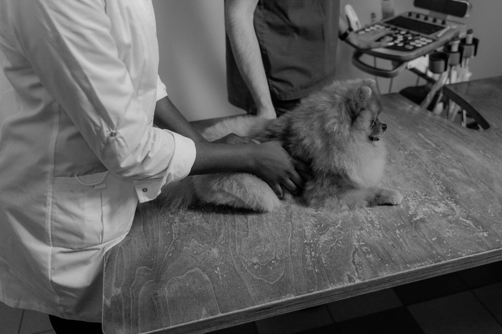
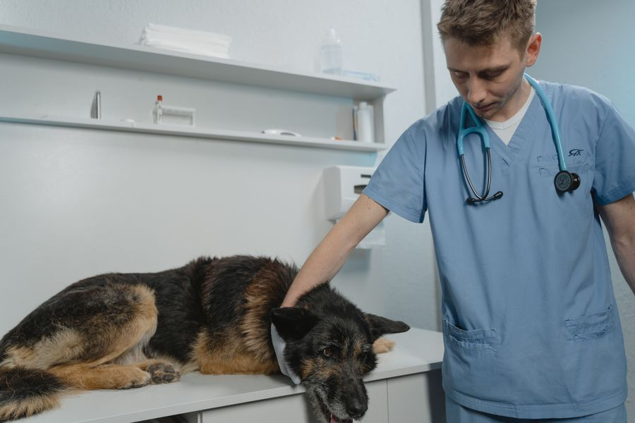
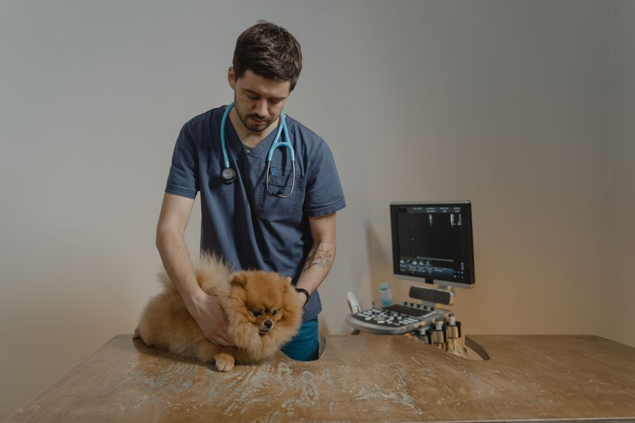

Consulta general
Revisiones, vacunas, desparasitación y primeras visitas con tiempo para preguntar.
Chamberí · Madrid
Clínica veterinaria de barrio con consulta sin prisas, cirugía propia y un equipo que recuerda el nombre de tu perro o gato.

Servicios
Un recorrido por las salas de la clínica. Cada paso, un cuidado distinto.
Revisiones, vacunas, desparasitación y primeras visitas con tiempo para preguntar.
Quirófano propio, anestesia monitorizada y seguimiento postoperatorio en casa.
Atención 24 horas los 365 días. Llama antes de venir y preparamos la sala.
Analíticas, radiografía digital, ecografía y citología en el mismo día si hace falta.
Alergias, otitis crónicas y problemas de piel con pruebas y tratamiento largo plazo.
Conejos, hurones, aves y roedores. Consulta adaptada a especies pequeñas.
Urgencias
No derivamos a otro centro. Urgencia leve o grave: llamas y te decimos cómo actuar antes de salir de casa.
Quiénes somos

Medicina interna · 15 años
Colegiada nº 2.845. Especialista en medicina felina y geriátrica.
Cirugía · Urgencias
Experto en traumatología y cirugía de tejidos blandos.
Dermatología · Exóticos
Consulta de piel alérgica y pequeñas mascotas no convencionales.

Familias
«Llevamos a Kira desde cachorra. La conocen por nombre y nos llaman para recordar la vacuna.»
«A las 2 de la madrugada con el gato que no respiraba. Nos atendieron en diez minutos y lo salvaron.»
«Tengo un conejo y en otros sitios no sabían ni por dónde empezar. Aquí sí.»
Dudas
Llama siempre. Preparamos la sala y te indicamos si puedes venir directamente.
Sí. Trabajamos con varias aseguradoras, pero la consulta privada no requiere póliza.
Unos 30–40 minutos. Queremos conocer a tu mascota y a ti, no solo pasar lista.
Tenemos farmacia en clínica. Te explicamos la pauta y resolvemos dudas por teléfono.
Contacto
Te confirmamos hora el mismo día laborable.
C/ Hilarión Eslava, 12 · 28015 Madrid